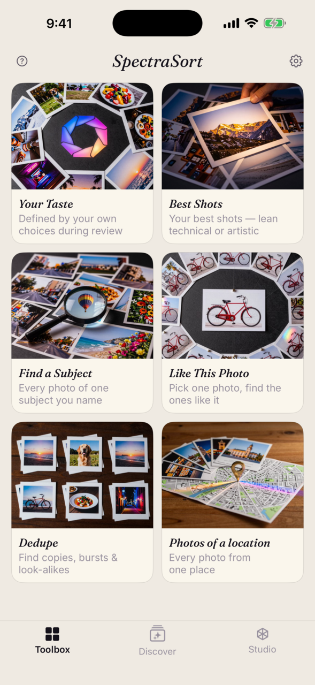
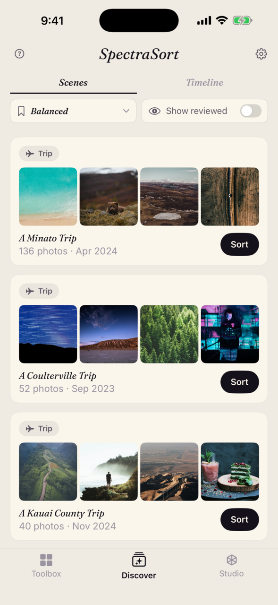
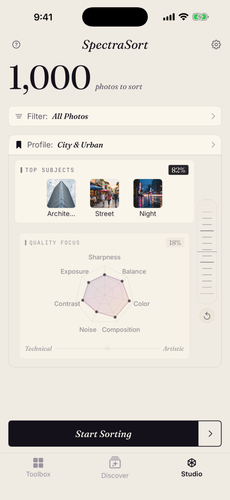

Find your best photos.
Every camera roll hides the shots you actually want. SpectraSort surfaces them — and learns your eye as it goes. Everything runs on your iPhone. Photos never leave it.

Six ways in. One tap each.
Each tool is pointed at a different photo you're looking for. Pick the tool, get the photos.
Type a thought. Your library answers.
Search anything you can put into words.

Type it the way you'd say it. Concrete works — "roses", "swimming seals". Compound works — "dogs at the beach", "cars in the city". Even abstract works — "cozy", "golden hour". The phrase is matched against your photos on your phone; neither the search nor the photos go anywhere.
It adds up on a trip: days of wandering a city collapse into one search — type a theme, and every shot of it you took lands in one grid. No albums, no tagging.
Point at one photo, get everything like it.
Photograph one statue on a trip and it returns the others you didn't remember shooting — one example becomes the whole collection. Similar-photo search that runs on your phone, not a server.


It learns your eye.
Every review teaches it: the photos you keep and the ones you let go shape a profile of your preferences, built and stored on your phone. Run Your Taste and the top of the pile starts looking like the photos you'd have picked yourself.
It's a profile like any other — load it, switch away from it, pause its learning, reset it. But what it rewards is yours.

Your best photos, surfaced.
After a sort, the best rise to the top — "best" meaning whatever you asked the tool for — with look-alikes stacked so you judge the strongest frame of a set, not the same moment ten times. Swipe through the result: right to pick the winners, down to keep, left to let go. Or let Autopick sort them and just skim. Nothing is applied until you tap an action — and when you're done, Batch Process finishes the job: picks to an album or the share sheet, the rest deleted if you say so.



Your whole roll, in order.
Face a big library one piece at a time. Scenes gather your trips, themes, and series on their own; a Timeline takes you year to month to day. Sort any slice with a tap.
400 photos → album, favorites, and shares in about 20 minutes.
The end-of-trip-day routine, as the developer runs it:
- Evening, hotel. Timeline → today's date → sort with your profile. The day's keepers rise to the top.
- One pass of swipes. Keepers down to Keep, the standouts right to Pick, the rest left to Discard. Stacks mean each repeated moment costs one decision.
- Batch Process. Kept and Picked into the trip album, the Picked favorited, the Discarded deleted. One screen.
- Time to share? Run Best Shots on the trip album — lean the slider technical or artistic depending on what "best to post" means today — and share the top of the pile.
Take the controls.
For when you want the controls: seven quality sliders — sharpness, exposure, composition and more — a weight wheel that splits subject against quality, and up to three subjects at once, even a photo as a subject. Save your settings as a profile, switch between them, bookmark the ones you reach for.
The weight wheel decides how much subject match matters relative to raw quality. Lean toward Subject and photos that hit your subjects rise to the top — even a stop underexposed. Lean toward Quality and the slider score takes over, regardless of what the photo is of. Anywhere between, both blend in the proportion you set.

Index once. Stays on your phone.
The first sort does the heavy lifting: your photos are indexed on Apple's Neural Engine — up to 100 a second — one time. Every sort after runs on that index and lands nearly instantly. No account, no internet, nothing collected from your photos. Verified by Apple's App Privacy nutrition label.
Five free sorts a week.
For everyone, forever — not a trial. Premium removes the weekly limit and opens Studio.
Common questions.
Do my photos ever leave my phone?
No. Every step — the scoring, the search, the taste profile — runs on your iPhone. There are no uploads. There is no SpectraSort server in the path.
Does SpectraSort upload my photos to the cloud?
No. SpectraSort never sends your photos anywhere. The models run on your iPhone's Neural Engine; every part of a sort — inference, scoring, ranking, the taste profile — happens on the device. The whole pipeline is local.
Does SpectraSort use my photos to train AI?
No. The models that ship with SpectraSort are pre-trained and do not learn from individual users' photos. Because everything runs on your iPhone, the maker has no way to access photo content — it never leaves your device.
What data does SpectraSort collect about me?
No data about your photos or their content. The app uses anonymous usage data — taps, screens viewed, crashes — to improve the experience. You can turn this off in Settings → Privacy. These analytics never include image data or anything linked to your identity. See the App Privacy nutrition label on the App Store for the full disclosure.
How fast is it?
The first sort does the heavy lifting: your photos are indexed on Apple's Neural Engine — up to 100 a second — one time. Every sort after runs on that index and lands nearly instantly.
How do I tell SpectraSort which photos to look for?
Pick the tool that matches the photo you're after. Your Taste sorts by a profile learned from your picks. Best Shots ranks by quality. Find a Subject searches anything you can put into words. Like This Photo takes one photo and finds everything like it. Photos of a location pins a place. Dedupe gathers duplicates and look-alikes into stacks. One tap each; all of it on-device.
Why are some of my photos grouped together?
That's stacking. SpectraSort groups exact duplicates, shots in a series, and near-identical look-alikes into a single stack, so you judge the best frame of a set instead of swiping past the same moment ten times. You choose what gets grouped — Duplicates, Sequence, Similar — or turn stacking off.
What's the difference between the profile types?
Taste is built automatically from the photos you keep and the ones you let go. Custom profiles are settings you dial in yourself in Studio — your own quality mix and subjects, saved under a name. Bookmarked profiles are the ones you've starred to reach quickly.
How does the Your Taste profile work?
As you review, SpectraSort learns from the photos you keep and the ones you let go — all on your device. The profile loads like any other, but what it rewards is drawn from your specific choices. You can pause learning any time — useful before a sharing session, so crowd-pleaser picks don't bend what the profile knows you like — and you can reset it in Settings. It never leaves your phone.
What's free and what does Premium unlock?
Free users get 5 sorts a week — a sort is counted when the Review screen opens, and the count resets Monday. Saving, sharing, and deleting your results is free and unlimited. Premium is $19.99 once: it removes the weekly limit and unlocks Studio — the quality sliders, the weight wheel, saved profiles. No subscription, no renewals.
I bought Premium in SpectraSort 2.x — do I keep it?
Yes. It's the same purchase, so Premium carries over automatically. If it doesn't show, tap Restore Purchases in Settings.
Will SpectraSort delete my photos?
Only when you tell it to. Nothing is applied until you tap an action in Batch Process, and every deletion goes through the system Photos confirmation dialog. Kept photos stay in your library, untouched.
What devices does it run on?
iPhone with iOS 18.5 or later. All processing runs on Apple's Neural Engine; newer chips index and sort faster.
How is this different from Apple Photos or Google Photos?
Apple Photos and Google Photos are built for browsing and storage. SpectraSort is built for finding — surfacing your best shots, ranked against what you asked for or what it has learned about your taste. And it's 100% local: unlike cloud photo services, nothing about your library leaves the phone.
Find your best photos.
Free for five sorts a week. iPhone, iOS 18.5 or later.
Download on the App Store